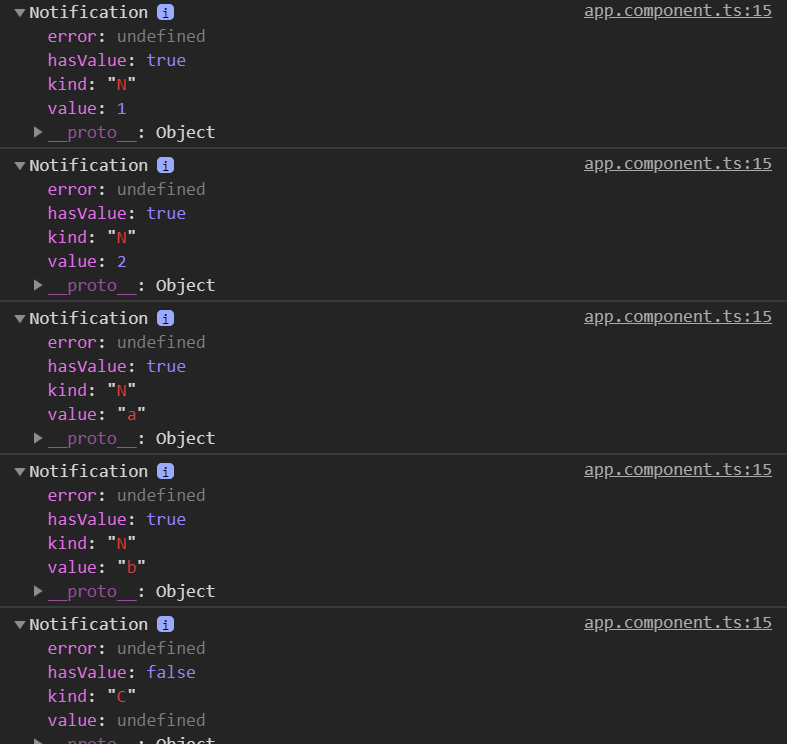
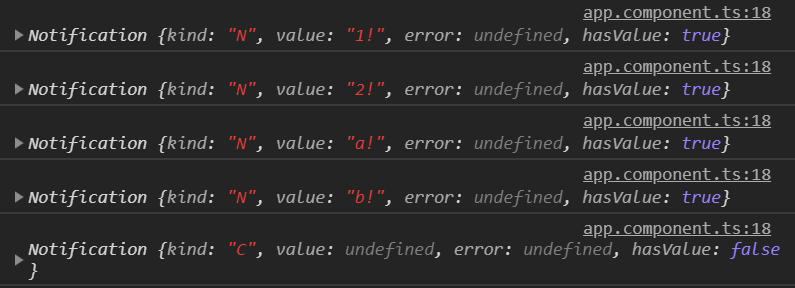
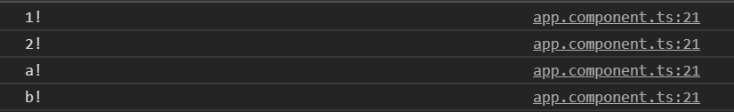
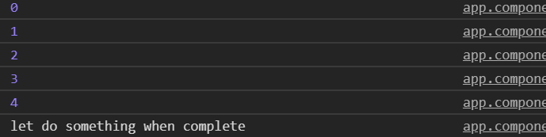

[RxJS] Notification
RxJS 內除了 Observable 之外，還有另外一種物件型別，稱做 Notification，什麼是 Notification 而他可以做到那些事情，就讓這篇文章來探討一下
基本介紹
Notification 是一個物件可以用來描述 Observable 所送出的事件資訊，例如這次送出的資料狀態是什麼? 是否有資料? 資料又是什麼? 我們可以透過這些資訊來做一些額外的判斷處理。
我們沒有辦法直接取得 Notification 類型的資料，需要搭配兩個 operator 來完成、materialize 與 dematerialize
materialize是將Observable送出的事件資料轉換成Notification物件dematerialize是將Notification轉換為Observable的事件資料
當然我們也可以直接建立 Notification 物件
範例
1 | of(1, 2, 'a', 'b') |
輸出結果

可以很容易的看到，透過 materialize 的方法，可以讓在 Observable 間流動的資料用物件的方式呈現相關的資訊，來做一點變化
1 | of(1, 2, 'a', 'b') |
- line 4: 透過 map 的方法，來加入一些判斷變化條件
輸出結果

最後到 subscribe 的步驟，維持 Notification 的格式是還蠻奇怪的，所以可以使用 dematerialize 做轉換
1 | of(1, 2, 'a', 'b') |
輸出結果

Notification
透過上述的範例，我們能知道一個 Notification 至少包含了幾個資訊
kind: 目前資料的狀態: N (Next), E (Error), C (Complete)value: 值/資料hasValue: 是否有包含資料error: 錯誤訊息
也可以直接使用 new Notification() 的方式建立
延伸變化
知道 Notification 之後，到底能用在哪裡呢? 例如想不寫 complete function 但又想要在完成時做動作時，這時候就可以利用 Notification 的 kind 來處理
1 | range(0, 5) |
執行結果

雖然上述的功能，可以利用 finally 來完成，但多知道一種變化型，不是很好嗎?
在深處思考一下以下的情形，是否能用 Notification 寫出 tap 的效果， tap 本身就接受 3 種狀態的 callback ( tap<T>(nextOrObserver?: PartialObserver<T> | ((x: T) => vlid), error?: (e:any) => void, complete?: () => void))，下面程式碼也可以做到一樣的事情
1 | materialize(), |
Notification的accept(nextOrObserver: PartialObserver | ((value: T) => void), error?: (err: any) => void, complete?: () => void)